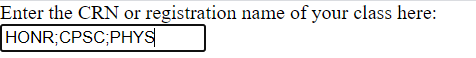
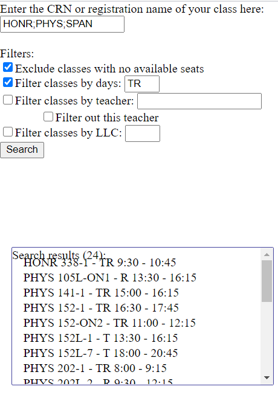

The search engine and you
Now that you've uploaded the CSV file, you can finally use the search engine to look at your options. You can use the box in the top left (see picture below) to enter the CRN (a 4 digit number for your class, if you've written them down) or search by a class's registration name (examples would be HONR 020 and SPAN 201; it should look like ABCD 123).

You can also search for multiple class subjects at the same time by putting a semicolon ";" between each entry, like in the example below. This allows you to pick out courses you want from just one search, instead of having to do multiple searches for different subjects.
Under the box for you to enter your search query, you can also use filters to apply to your search. By default, the program will only return classes with available seats as results, so that you don't find yourself making a schedule out of closed courses. You can filter courses by different days by typing in the different days in a format like "TR" or "MWF", meaning that the program will only return courses on Tuesday/Thursday, or Monday/Wednesday/Friday, respectively. You can also filter courses by teacher and LLC requirements - there is an option to search for multiple teachers at once, using the same format as multiple subjects in the search bar. By typing in "teacher name 1;teacher name 2; teacher name 3; etc." you are able to filter multiple teachers at once.
After you have applied filters and filled out the search box, click on the button labelled "Search" to search for your classes. The search results should show up in the box below. Now that you've searched for your classes, it's time to make your schedule.